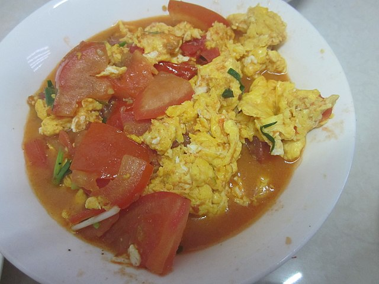

Egg Tomato

Zutaten
- 2 Eier
- 2 Tomaten
- 1/2 TL Bouillon
- Salz
Vorgehen
- Eier mit bouillon verrühren
- Tomaten in ca. 1 cm grosse Stücke schneiden
- Öl in Bratpfanne erhitzen
- Eier braten (scrambled)
- Tomaten zugeben und separat braten bis sich Haut von Fruchtfleisch zu lösen beginnt
- alles vermischen
- wenn gewünscht mit Frühlingszwiebeln garnieren
Quelle: New York Times